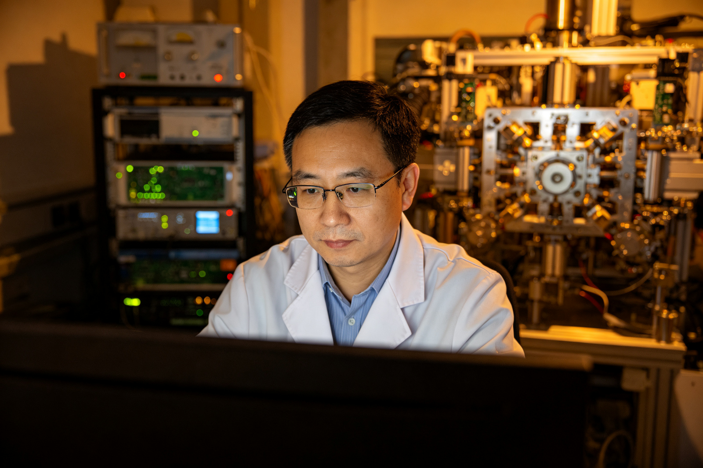
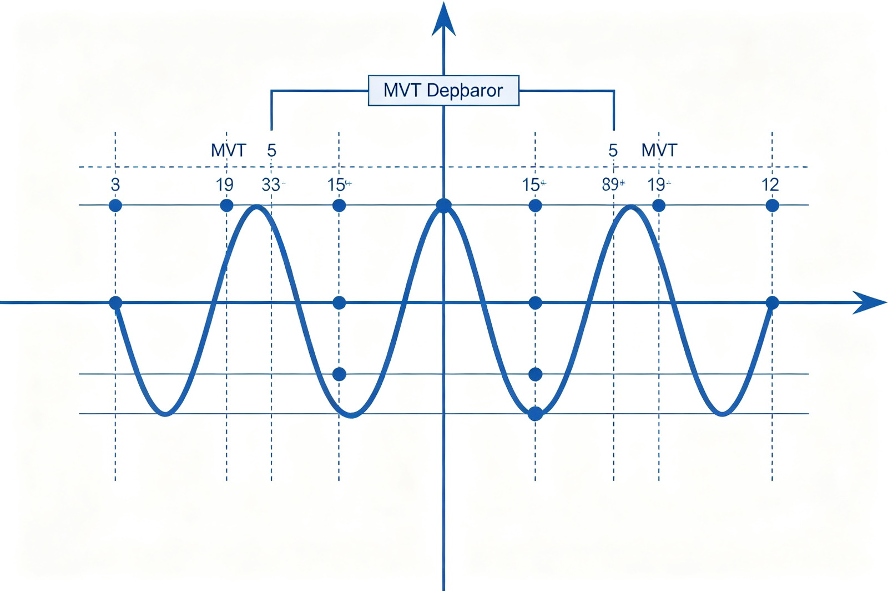
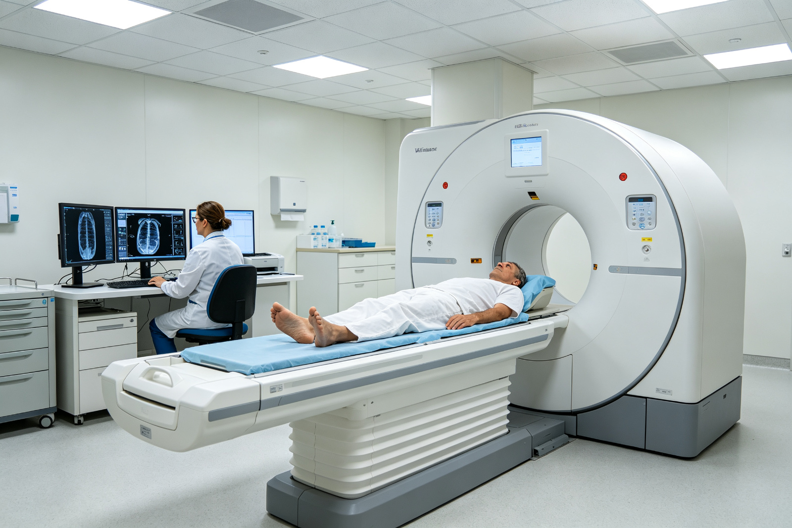

杰青项目让我挺进全数字PET"无人区"
一提到癌症，许多人"谈癌色变"。如今，科学家研制出这样一台新设备，可以更早、更快、更精准地"捕捉"代谢异常的癌细胞，实现癌症的"早筛查、早诊断、早治疗"。
这台设备就是国家杰出青年科学基金项目（以下简称杰青项目）获得者、中国科学技术大学教授谢庆国带领团队自主研发的"全数字正电子发射断层成像仪（All-digital Positron Emission Tomography，简称全数字PET）"，是当前最尖端的医学分子影像设备之一。
2004年，谢庆国率先在国际提出"全数字PET"的概念。此后的20年，完成了从概念到系统、从原理到应用的跨越。
2014年，"数字PET成像"项目获得杰青项目资助。谢庆国认为："杰青项目格外体现了国家自然科学基金委员会（以下简称自然科学基金委）的公平性和包容性。让我这样埋头干活的一线科研工作者也能被发现、被支持，给了我们这个草根团队挺进全数字PET'无人区'的勇气和底气。"

一、申报即成长
2014年6月，位于北京的西郊宾馆内的杰青项目答辩现场，谢庆国身着正装，在等待着进场"考试"期间，他默默地将答辩内容"数字PET成像"在脑海中又过了一遍。
PET是正电子发射断层成像仪的简称。这种检测方法具有极高的生化灵敏度，能够"捕捉"代谢异常的细胞，在恶性肿瘤、神经系统疾病、心血管系统疾病等诊疗上具有巨大潜力。然而，传统PET技术长期被西方垄断，费用高昂，且技术原理自发明后的40余年内并无突破，存在"测不准、操控难、应用窄"的问题，PET的巨大潜力始终未得到充分发挥。

针对以上问题，谢庆国另辟蹊径，2004年在全球首次提出"全数字PET"的概念，创造性探索出"多电压阈值（Multi-Voltage Threshold，简称MVT）采样法"，解决了PET领域中的关键技术难题。
经过多年攻关，全数字PET虽有了一定的技术积累，并完成了初步的仪器研发，但想要进一步发展，还需要大量的经费和工程投入。
2011年，谢庆国毫不犹豫地递交了杰青项目申请书。对于"有三分机会就要全力一博"的他而言，杰青项目的申请之路也就是成长之路。
"MVT方法是一个全新的采样理论，取得认可绝非一朝一夕，要将其应用于全数字PET研发，更面临工程上的巨大挑战。三年中，我每一次申请，专家们都给出了很多宝贵建议，我们也在不断调整修改。"谢庆国说，"直到2014年，专家们才觉得整个研究架构差不多建起来了。"
2014年，谢庆国终于成功获批杰青项目。来自5位专家的充分肯定，让他更坚定了"数字PET"项目的努力方向：自主可控、技术成熟和高度原创。
- 2001年，团队成立；
- 2004年，提出MVT全数字PET方法；
- 2007年，实现了世界上首台平板PET；
- 2010年，全球首台数字PET科学仪器问世；
- 2013年12月，首台数字PET问世；
- 2014年，"数字PET成像"项目获杰青项目资助；
- 2015年8月，成功开发世界首台临床全身全数字PET系统；
- 2017年11月，世界首台质子PET原理机研制成功；
- 2018年8月，临床全身全数字PET/CT完成临床试验；
- 2018年9月，世界首台脑部专用全数字PET研制成功；
- 2019年6月，全数字PET获国家药监局准产批件；
- 2019年底，杰青项目结题，首台临床全数字PET获市场准入资质。
二、挺进无人区
全数字PET之于传统PET，好比数码相机之于胶片相机，是一项革命性技术创新。
"全数字PET具有三大技术特性，即模块化、全计数和全数据。不仅能拓展到高灵敏度的应用场景，还有望从非图像信息中挖掘更丰富的病理、生理信号。"谢庆国告诉记者，然而，他并不仅仅满足于技术原理的创新。

在他看来，尖端科学仪器既是科学发现利器，又是技术发明温室，更是学科交叉平台。在基础研究普遍依赖进口仪器的当下，自主开发仪器对引领学科发展有关键价值。
"PET作为典型医工交叉方向，技术门槛高、学科领域广，想要实现全数字PET仪器设备真正应用落地，并发挥出'人无我有'的性能潜力，对于我们这样的草根团队，难如登天。"谢庆国表示。而杰青项目给团队的支持发挥了决定性的作用。
"杰青项目就是我的'天使投资人'，我们刚刚踏足这一领域时，没有跟随西方发达国家相关企业的成熟技术路线，而是开辟一条新路，此路通不通、方向对不对，我心里也都是问号。"谢庆国说，"杰青项目不仅给了我们科研资金上的关键支持，还提供了学界广泛认可的权威平台以及高水平的专家资源，让我有底气、有勇气。"

2019年底，杰青项目结题时，首台临床全数字PET已经获得市场准入资质，实现了从原理创新到临床应用的突破。"与高端医疗器械领域动辄数十亿、数百人的投入相比，我们只花了十分之一的资金，百分之一的人力。"谢庆国说。
"我们贡献了评价'全数字PET'的全新标准。以前我们描述PET产品的技术进步，都是以计算机断层扫描（Computed Tomography，简称CT）的排数为指标，排数越多就越高级。现在大家都以'是不是全数字PET'作为衡量PET产品先进性的最高技术指标。"谢庆国告诉《中国科学报》。
三、应用路漫漫
在谢庆国看来，撰写杰青项目申请书本质上是提出问题的过程。科研工作者在不断回应专家质疑、修改申请书的过程中凝练研究方向、确立学术思想，这对于后续科学研究至关重要。
"在申请杰青项目过程中，通过和专家的交流沟通，我们也逐渐加深了对全数字PET的认识，让我有了更清晰的研究路线图。"谢庆国说。
下一步，他希望将数字PET实验室做成"百年老店"，跨学科、跨单位、跨国界的广泛合作将成为重点，让更多的青年医生和科学家投身其中。
谢庆国表示，从事基础研究的科学家还承担着更多重任。"在从'中国制造'到'中国创造'的发展过程中，市场和应用的问题也逐渐凸显。如果数字PET完全以市场形态走下去，因为没有过往业绩和品牌知名度，会很难，这就需要像杰青项目这样的国家层面示范性支持。"
他期待，杰青项目未来能够更加注重创新生态系统的构建，例如打通创新成果的快速转化渠道、建立开放的数据共享平台和高端实验设施共享机制等。
此外，谈及近年来自然科学基金委针对杰青项目推出的改革措施，谢庆国认为，"结题分级评价及延续资助机制、放宽女性入选年龄限制等措施，都是朝着更加开放、包容和科学的方向迈出的重要步伐，尤其实施结题分级评价及延续资助机制，更强调了杰青项目的项目属性，鼓励科研人员不断产出高质量的研究成果。"